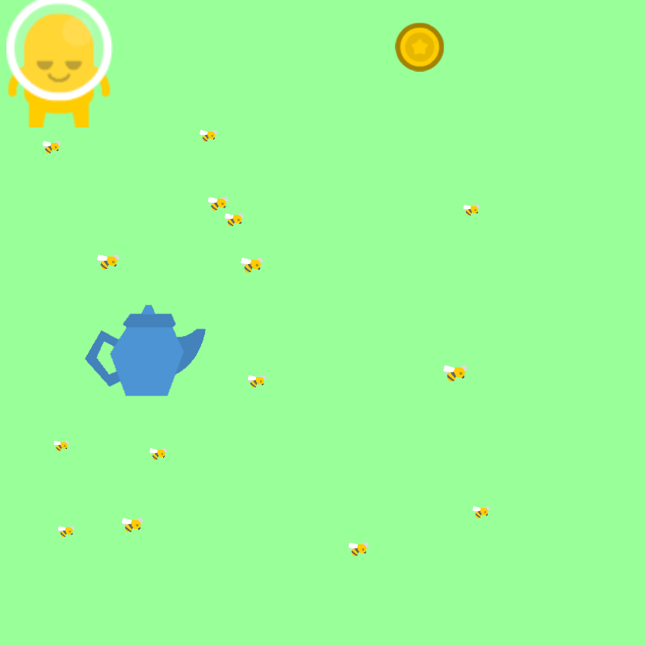
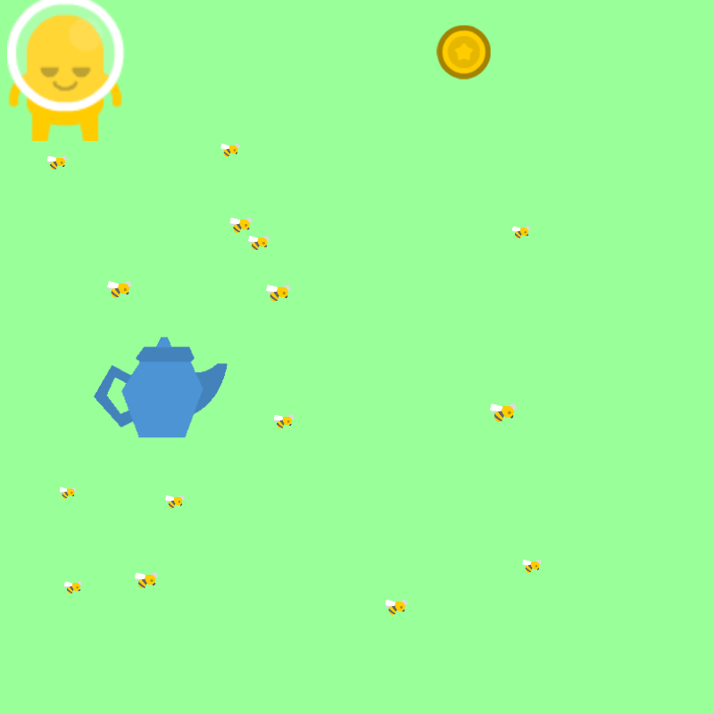

The origins of the oboe, the highest pictched double reed instrument, can be traced back to the shawns of the late 1200s, when this double-reed instrument family was prominent in music (during the Middle ages from 500-1430). The french court musicians Jean Hottere and Michel Philidore invented the oboe in 1660. The oboe family includes the one and only Oboe, which is in C; the Oboe d' Amore, which is in A; and lastly, the English horn in F. It's in treble clef and its sound ranges from low A#/B♭ to high F. It is a fun instrument to play and has many important composers who wrote for it, including Vaughan Williams, C.P.E. Bach, Mahler, Beethoven, and R. Strauss.
I like playing the Oboe because it sounds great. The sound can be very rich and warm, making you feel relaxed, and cozy. But, it sure doesn't lack in the ability to play upbeat, fast-paced music either. I am Rachit Srivastava, a 12 year old, going into 7th grade. In band class, and at home, I practice it. Though it's certainly not the easiest instrument to play, and of takes effort and hard work to get good at, I beleive that it is a great instrument, and something that I enjoy. So, I like it.
(Also because I didn't want to play the flute at the time and oboe was the only option that seemed decent).


.png) 


Image 1: This is Vidushi ma'am. She is the one that teaches me coding.
Image 2: He is my father. He started my coding journey.